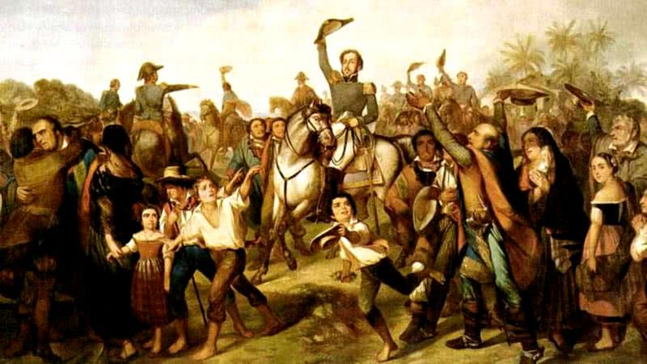

O Marco da Independência
Em 7 de setembro de 1822, Dom Pedro I declarou a independência do Brasil às margens do Rio Ipiranga. Esse evento marcou o fim da colonização portuguesa e o início de um novo capítulo na história brasileira.
A independência foi influenciada por fatores internos e externos, incluindo a Revolução Francesa e os movimentos de independência na América Latina. Além disso, o aumento da pressão sobre Portugal para atender às necessidades do Brasil foi determinante.